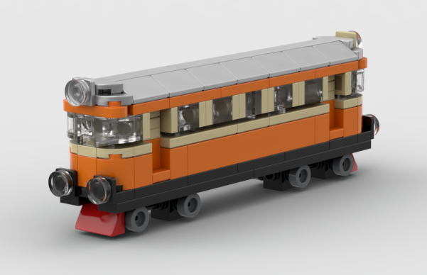

OCKELBO
SJ YP • 1960-TALET

Små byggstenar, stora minnen
En liten modell av en resa genom Ockelbo – inspirerad av SJ YP, stationen och 1960-talet.
Bygginstruktioner

Öppna PDFPDF-filen läggs här när instruktionerna är färdiga.
SJ YP • 1960-TALET
En liten modell av en resa genom Ockelbo – inspirerad av SJ YP, stationen och 1960-talet.

Öppna PDFPDF-filen läggs här när instruktionerna är färdiga.